| A Gyűrűk Ura Trilógia | 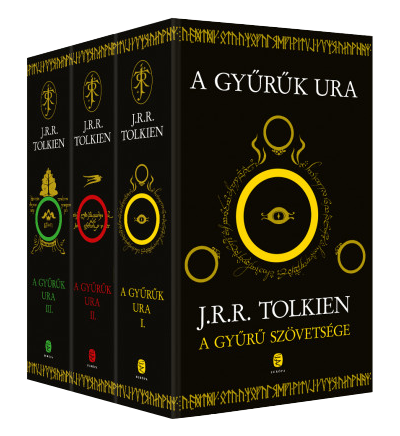 | 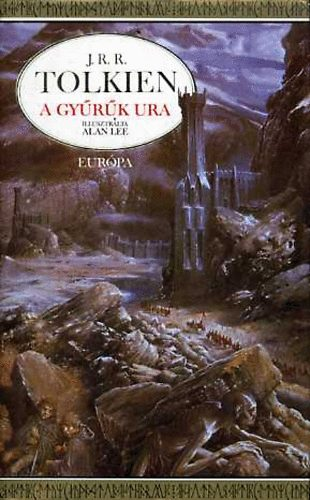 | Ár:19000Ft Vásárlás |
| Minecraft:a Sziget | 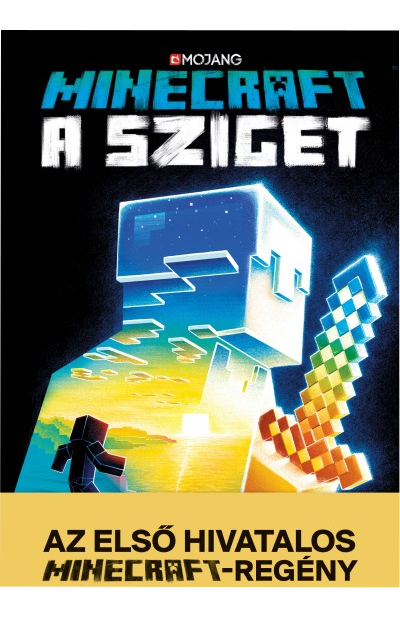 | 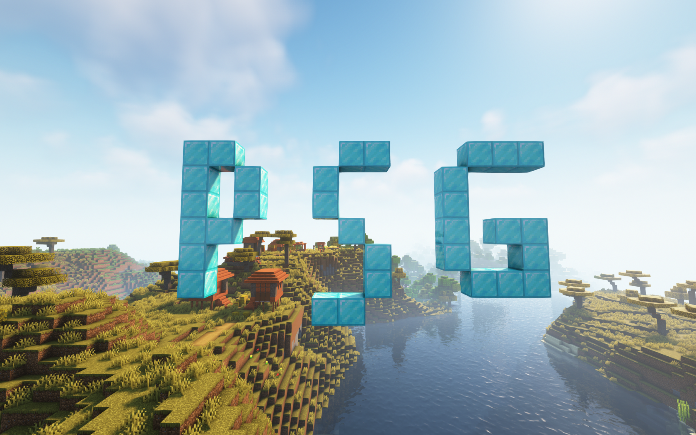 | Ár:3000Ft Vásárlás |
| Nyugaton a helyzet változatlan | 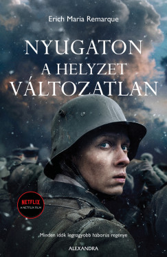 | nem találtam jó képet:( | Ár:4124Ft Vásárlás |
| Sherlock Holmes:A Sátán Kutyája | 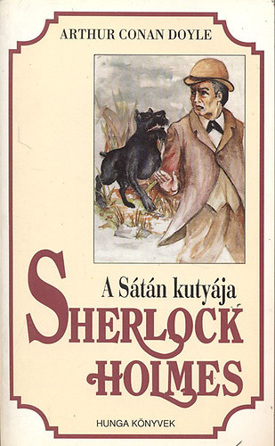 | nem találtam jó képet:( | Ár:5000Ft Vásárlás |
| Páncélosok a Sivatagban | 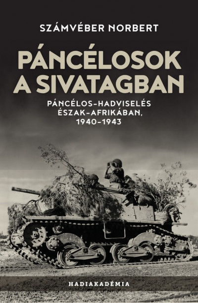 | 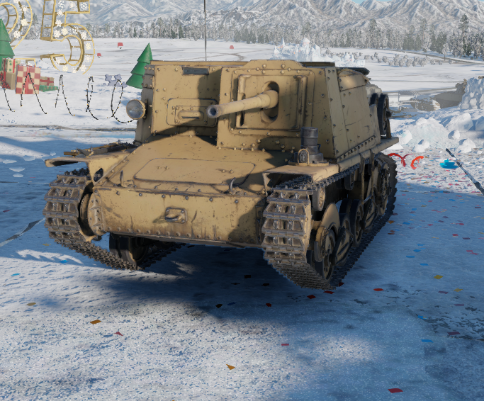 | Ár:6640ft Vásárlás |
| Poirot | 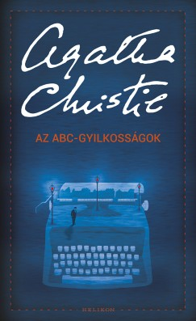 | nem találtam jó képet:( | Ár:3514Ft Vásárlás |
| A Hobbit | 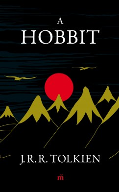 | nem találtam jó képet:( (amúgy Áron) | Ár:4274Ft Vásárlás |
| Kézifegyverek képes enciklopédiája | 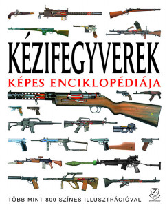 | 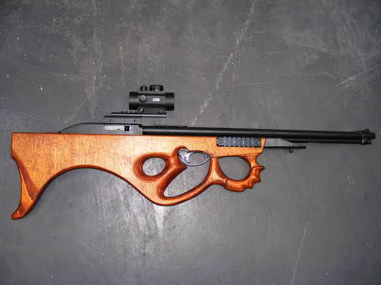 | Ár:6000Ft Vásárlás |
| Egy Ropi Naplója | 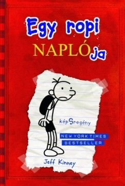 | Literally me Fr Fr | Ár:6640Ft |
| Verhetetlen Páros | 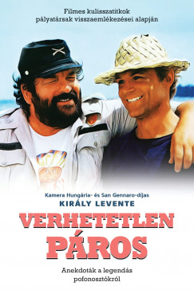 | nem találtam jó képet:( | Ár:4749Ft Vásárlás |